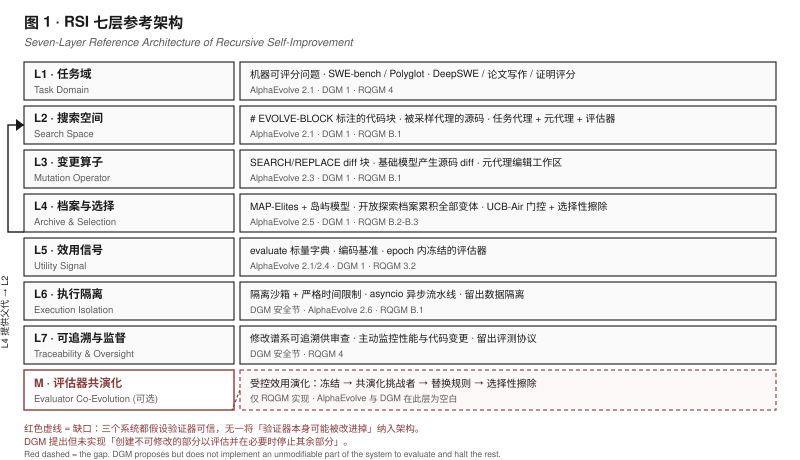
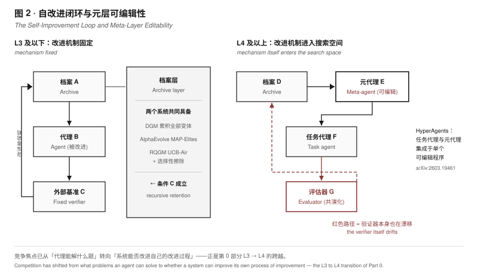

七层结构 · AlphaEvolve / DGM / RQGM 逐层对照 · 元层可编辑性与不可变基座的缺口
Seven layers, three systems mapped layer by layer, meta-layer editability, and the missing immutable base
v1 版本把 DGM、AlphaEvolve、Gödel Agent、Red Queen 各自讲一遍，每篇论文自成体系，读者无法判断它们是同一件事的不同实现，还是四件不同的事。本章把三者投影到同一张七层参考架构上——每个组件都注明出自哪篇论文的哪一节，不做统一发挥。
The v1 treatment explained DGM, AlphaEvolve, Gödel Agent and Red Queen separately, each in its own terms, leaving readers unable to tell whether these are different implementations of one thing or four different things. This chapter projects all of them onto a single seven-layer reference architecture, citing for each component the paper and section it comes from rather than imposing a unification of our own.
这七层不是我们设计的理想架构，而是从三个已发表系统的实际组件中归纳出来的最小公共结构。凡是三个系统都具备的，列为核心层；只有一个或两个具备的，列为可选层。
These seven layers are not an ideal architecture we designed but the minimal common structure induced from the actual components of three published systems. Layers present in all three are marked core; layers present in only one or two are marked optional.
| 层 | 名称 / Layer | 类型 | 职责与实证依据 / Responsibility and evidence |
|---|---|---|---|
| L1 | 任务域 Task domain |
核心 | 改进所针对的问题域与其自动评分接口。AlphaEvolve 要求问题具有机器可评分的解（machine-gradeable solutions），由用户提供映射到标量指标的 evaluate 函数；DGM 取 SWE-bench 与 Polyglot。 |
| L2 | 搜索空间 Search space |
核心 | 被允许修改的对象及其边界。AlphaEvolve 用 # EVOLVE-BLOCK-START / # EVOLVE-BLOCK-END 注释标注可演化代码块，块内用户代码作为初始解，其余代码构成骨架；DGM 直接以代理源码为搜索空间；HyperAgents 把任务代理与元代理放进单个可编辑程序。 |
| L3 | 变更算子 Mutation operator |
核心 | 把采样到的父代变成候选子代的变换。AlphaEvolve 要求模型输出 <<<<<<< SEARCH … ======= … >>>>>>> REPLACE 格式的 diff 块以做定向局部替换，代码短时也可配置为整体输出；DGM 同样由基础模型对采样代理源码产生 diff。 |
| L4 | 档案 / 选择 Archive & selection |
核心 | 跨代保留与父代采样。AlphaEvolve 的进化数据库受 MAP-Elites 与岛屿种群模型启发，设计难点是平衡探索与利用；DGM 维护开放探索档案累积全部变体，受开放式研究启发；HyperAgents 用 UCB-Air 门控决定扩展或评估，并以 Thompson 采样在 CMP 上抽父代。 |
| L5 | 效用信号 Utility signal |
核心 | 把候选映射为标量的裁决机制。AlphaEvolve 用多指标评分（可含多个标量）；DGM 用编码基准，并明确声明"基准成绩提升 ⇒ 自改进能力提升"这一假设。 |
| L6 | 执行隔离 Execution isolation |
核心 | 候选代码的实际运行边界。DGM 报告：所有代理执行与自修改过程都在隔离沙箱环境中进行，限制其影响宿主系统的能力；沙箱内每次执行都受严格时间限制，降低资源耗尽或无界行为的风险。 |
| L7 | 可追溯与监督 Traceability & oversight |
核心 | 让人能审查与回滚。DGM 主动监控代理性能与代码变更，其档案提供可追溯的修改谱系供审查；论文同时记录"目前未发现生成代理有有害或恶意行为"。 |
| M | 评估器共演化 Evaluator co-evolution |
可选 | 只有 RQGM 具备。把评估器本身纳入搜索空间：每个 epoch 内冻结一个评估器为所有任务代理打分以提供固定效用信号，同时并行共演化挑战者评估器并在留出真值集上打分；epoch 边界处挑战者只有在提高在任者的最优信念分数时才替换之，随后施加选择性擦除——只丢弃依赖被替换评估器的效用记录。 |

下表逐层对照。空白单元格表示该系统在此层没有对应组件——空白本身就是发现，它指出了每个系统各自的边界。
Layer-by-layer comparison below. An empty cell means the system has no counterpart at that layer — the gaps are themselves a finding, marking each system's boundary.
| 层 / Layer | AlphaEvolve Google DeepMind, 2025 | Darwin Gödel Machine Zhang et al., 2025 | Red Queen Gödel Machine 2026 |
|---|---|---|---|
| L1 任务域 | 机器可评分问题：矩阵乘法分解、开放数学问题、数据中心调度、Gemini 内核、硬件电路、编译器生成代码 | SWE-bench（软件工程）、Polyglot（代码推理） | DeepSWE（编码）、论文写作/评审、奥林匹克级证明写作/评分 |
| L2 搜索空间 | # EVOLVE-BLOCK 标注的代码块 |
被采样代理的 Python 源码 | 任务代理 + 评估器代理（评估器也在空间内） |
| L3 变更算子 | SEARCH/REPLACE diff 块；可选整体重写 | 基础模型对源码产生 diff | 元代理编辑工作区（节点内的角色） |
| L4 档案 | 进化数据库：MAP-Elites + 岛屿模型；目标是最优地重新浮现旧想法 | 开放探索档案，累积全部生成变体，受开放式研究启发 | 工作区节点；UCB-Air 门控；选择性擦除清理失效效用记录 |
| L5 效用信号 | 用户提供的 evaluate，返回标量字典；可多指标 |
编码基准分数（假设其为自改进能力的代理） | epoch 内冻结评估器 + 并行共演化的挑战者 |
| L6 执行隔离 | 评估节点；异步流水线（asyncio），为吞吐优化 | 隔离沙箱 + 严格时间限制；范围限定在特定编码基准 | 留出数据集隔离：产生节点的反馈与选择节点的证据相互分开 |
| L7 可追溯 | 程序数据库附分数与输出 | 档案提供可追溯修改谱系供审查；主动监控性能与代码变更 | 留出评测协议；epoch 向量记录替换历史 |
| M 评估器共演化 | — | — | ✓ 受控效用演化 |
AlphaEvolve 论文第 2 节的六个小节标题本身就是一份架构清单，本章的层划分与其一一对应。
The six subsection titles of AlphaEvolve's Section 2 constitute an architectural inventory in their own right, and this chapter's layers map onto them one to one.
| 论文小节 / Paper section | 对应层 | 论文原文要点 / Substance from the paper |
|---|---|---|
| 2.1 Task specification 任务规格 |
L1 + L2 | 评估函数把解映射到标量指标集合，约定最大化，通常是固定签名的 Python evaluate 返回标量字典；执行代价可从数秒单机到大规模计算不等。API 用 # EVOLVE-BLOCK-START / # EVOLVE-BLOCK-END 注释标记待演化代码块，块内代码为初始解，块外为骨架；初始实现必须完整但可以很粗，例如返回适当类型常量的单行函数。 |
| 2.2 Prompt sampling 提示采样 |
L4 | 演化提示由程序数据库中采样的多个既有解与"如何提出修改"的系统指令组成；另支持显式上下文、随机化模板、渲染的评估结果，以及元提示演化——指令与上下文由 LLM 自身建议，在与解程序类似的独立数据库中共演化。 |
| 2.3 Creative generation 创造性生成 |
L3 | LLM 的主要职责是消化既有解并提出多样改进；以 SEARCH/REPLACE diff 格式返回以实现定向更新；AlphaEvolve 是模型无关的，但消融显示底座 LLM 越强效果越好。 |
| 2.4 Evaluation 评估 |
L5 | 支持多分数；评估函数即效用定义。 |
| 2.5 Evolution 进化 |
L4 | 进化数据库的首要目标是在后续世代中最优地重新浮现此前探索过的想法；核心设计挑战是平衡探索与利用，算法受 MAP-Elites 与岛屿种群模型组合启发。 |
| 2.6 Distributed pipeline 分布式流水线 |
L6 | 以 asyncio 实现的异步计算流水线，多计算并发，任一计算在其下一步依赖未完成结果时阻塞等待；流水线由控制器、LLM 采样器、评估节点组成；为吞吐而非单次计算速度优化，以最大化给定总预算内可提出并评估的想法数。 |
DGM 的差异化设计全部集中在 L4。它的论证结构是：改进被保留 → 形成生长的树 → 支持并行探索多条搜索路径 → 发现立即无收益但未来有价值的"垫脚石"。
DGM's differentiator sits entirely in L4. Its argument runs: improvements are retained → a growing tree forms → many search paths are explored in parallel → "stepping stones" with no immediate payoff but future value are discovered.
· 档案初始化与累积：DGM 维护一个生成的编码代理档案，初始化时仅含一个代理，并随时间持续累积所有生成的变体。
· 采样与自修改：从档案中采样代理，被采样的代理自修改以创建新的、有趣的自身版本；每次修改后的代理在编码基准上测试，然后加入档案。
· 开放式探索：受开放式性研究启发，累积多样的垫脚石（即有趣但次优的解或特性，可能促成未来突破），鼓励发现超越即时性能收益的新颖自修改。
· 涌现的元层能力：DGM自动改进其编码能力（更好的代码编辑工具、长上下文窗口管理、同伴评审机制）。
· 关键假设（论文明写）：编码基准上性能提升意味着更好的编码能力，因而意味着更好的自我修改与自我改进能力。
Source: DGM §1 and Abstract, arXiv:2505.22954. 代码开源于 github.com/jennyzzt/dgm.
RQGM 解决了 v1 版本标记为空白的一处：评估器是否可信、能否一起进化。它的做法不是让评估器自由漂移，而是用 epoch 结构把"效用固定的搜索"与"效用随代变化"两种情形统一起来。
RQGM addresses what v1 flagged as an open gap: whether evaluators can be trusted and evolved alongside agents. Rather than letting the evaluator drift freely, it uses an epoch structure to unify stationary-utility search with utility that varies across generations.
1 · 冻结：在每个进化 epoch 内，冻结一个评估器，为所有任务代理打分，提供固定（平稳）的效用信号。
2 · 共演化：并行地，搜索把挑战者评估器与其任务代理一起共演化，并在留出的真值数据集上打分挑战者。
3 · 替换规则：在 epoch 边界，挑战者仅当它提高了在任者（incumbent）的最优信念分数时才替换冻结的评估器，判据是一个替换准则。
4 · 选择性擦除：替换后只丢弃那些依赖于被替换评估器的效用记录。
Each epoch is thus a fixed-criterion search problem, so the underlying guarantees apply within each epoch. Because validity requires only a fixed within-epoch utility plus boundary erasure of dependent records, time-varying benchmarks and adversarial objectives fit the same structure.
Source: RQGM v3 §3.2（v1 §3.5）/ §B.3, arXiv:2606.26294
· 角色与任务池：每个节点是一个工作区，持有由任务代理与评估器构成的角色，加上编辑该工作区的元代理；每个角色在自己的任务池上打分——例如论文评审者有一个针对人类撰写论文的任务、一个针对代理生成论文的任务。
· 评估器槽与 epoch：依赖评估器的角色通过评估器槽打分，槽的 epoch 索引记录其替换次数；槽独立替换，其索引构成 epoch 向量，替换一个槽推进其中一个分量。
· 数据隔离：产生节点的反馈与选择它们的证据相互分开；对依赖评估器的角色，任务代理为训练和搜索分别生成新鲜产物，只有搜索产物、由该 epoch 冻结评估器打分，才进入效用。
· 三级采样层级：调度器交织扩展与评估；扩展经 Thompson 采样在 CMP 上抽父代；评估下探两层——先选最未被评估的合格角色，再选其最未被评估的合格任务。
Source: RQGM §B.1–B.3 and §F, arXiv:2606.26294
三个系统都把任务域限制在可自动打分的问题上，这不是巧合而是架构约束：评分机制无法判断的东西，搜索就无法优化。AlphaEvolve 明确写"由于 AlphaEvolve 处理的是具有机器可评分解的问题，用户必须提供自动评估生成解的机制"。RQGM 之所以要把评估器纳入搜索空间，正是因为在论文写作与证明评分这类域中根本没有真值基准，只有评审。
All three systems restrict the task domain to automatically scorable problems — not by coincidence but by architectural necessity: what the scoring mechanism cannot judge, the search cannot optimize. AlphaEvolve states it directly: "Since AlphaEvolve tackles problems with machine-gradeable solutions, the user must provide a mechanism for automatically assessing generated solutions." RQGM's decision to place the evaluator inside the search space follows precisely because domains like paper writing and proof grading have no ground-truth benchmark at all — only reviewers.
AlphaEvolve 的元提示演化已触及元层（由 LLM 自己建议指令，并在独立数据库中共演化），HyperAgents 更进一步把任务代理与元代理集成进单个可编辑程序，使元层修改过程本身可编辑。RQGM 则从另一侧推进——把评估器纳入空间。三者方向不同，但都指向同一个判断：竞争焦点已从"代理能解什么题"转向"系统能否改进自己的改进过程"。这正是第 0 部分 A3→A4 级的跨越。
AlphaEvolve's meta-prompt evolution already touches the meta-layer (instructions suggested by the LLM itself, co-evolved in a separate database); HyperAgents goes further by integrating task agent and meta agent into a single editable program whose meta-level modification procedure is itself editable. RQGM advances from the opposite side by placing the evaluator inside the space. The directions differ, but they converge on one judgment: competition has shifted from what problems an agent can solve to whether a system can improve its own process of improvement — precisely the L3→L4 transition defined in Part 0.

公众讨论集中在"代理能自改多少"，但 DGM 论文安全一节提到的多项措施中，隔离沙箱与时间限制对应 L6、可追溯的修改谱系对应 L7。更值得注意的是，DGM 论文主动提出了一个尚未实现的设计：创建系统的一部分使其不可修改，以便评估并在必要时停止其余部分；并指出把 Constitutional AI 从一开始就编织进来所面临的挑战是激励系统保留这些指令。这说明"不可变基座"是当前架构讨论中最缺的一层——三个系统都假设验证器可信，却没有系统把"验证器本身可能被改进掉"纳入架构。
Public discussion concentrates on how much an agent can self-modify, yet three of the four safeguards DGM reports in its safety section belong to L6/L7: isolated sandboxes, strict time limits, and a traceable lineage of modifications. More strikingly, the DGM paper proactively proposes a design it has not implemented: creating an unmodifiable part of the system so it can evaluate and halt the rest — while noting that weaving Constitutional AI in from the start faces the challenge of incentivizing the system to retain those directives. This exposes a structural gap: the immutable base is the least developed layer in current architecture — all three systems assume the verifier is trustworthy, and none places "the verifier itself may be improved away" into the architecture.
受控效用演化之所以要求"挑战者只有在提高在任者的最优信念分数时才替换"，并且要求在替换时选择性擦除依赖记录，是因为评估器本身也在漂移——若不控制，搜索会逐渐优化一个已经偏离真值的度量。这是对 L6/L7 缺口的第一个形式化回应，但目前只在 RQGM 一个系统中实现。
Controlled utility evolution requires that a challenger replace the frozen evaluator only if it raises the incumbent's best-belief score, with selective erasure of dependent records at the boundary, precisely because the evaluator drifts too. Without control, the search gradually optimizes a measure that has already drifted from ground truth. This is the first formal answer to the L6/L7 gap — but it exists in exactly one system.
三个已发表系统可映射到同一套七层参考框架（该框架由本文归纳，非各论文自述），差别集中在 L4（档案策略）、L5（验证器强度）与可选层 M（评估器共演化）。这意味着路线之争不是"架构之争"，而是在同一架构上争夺 L4/L5 两层的具体选择。第 3 部分将检验这个判断在工业系统中是否成立；第 4 部分则展开 L4/L5 的取值如何决定成本结构与失败模式。
The three published systems are structurally highly consistent: the same seven-layer skeleton, with differences concentrated in L4 (archive strategy), L5 (verifier strength) and the optional layer M (evaluator co-evolution). The route debate is therefore not architectural but a contest over the specific choices at L4 and L5 within one shared architecture. Part 3 tests whether that reading holds across industrial systems; Part 4 examines how the values taken at L4/L5 determine cost structure and failure modes.
第 3 部分沿同一七层坐标考察工业系统的可核实主张与证据口径。
Part 3 examines industrial systems layer by layer along L1–L7: who self-limits the task domain, who maintains an archive, and who has turned the verifier into a product.